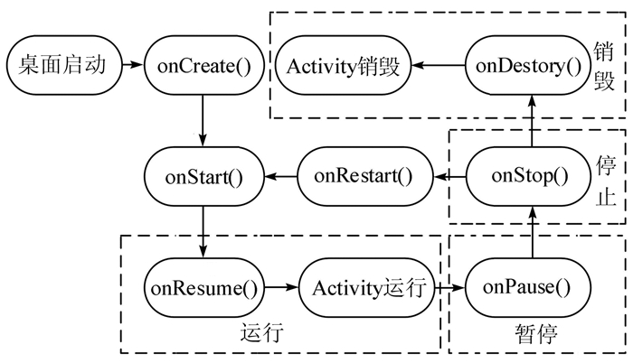
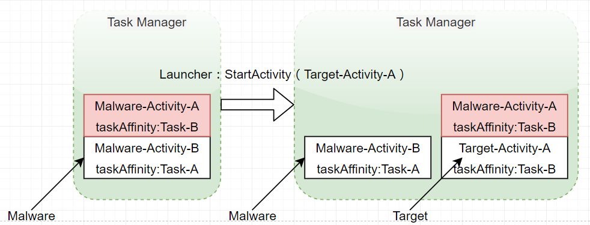
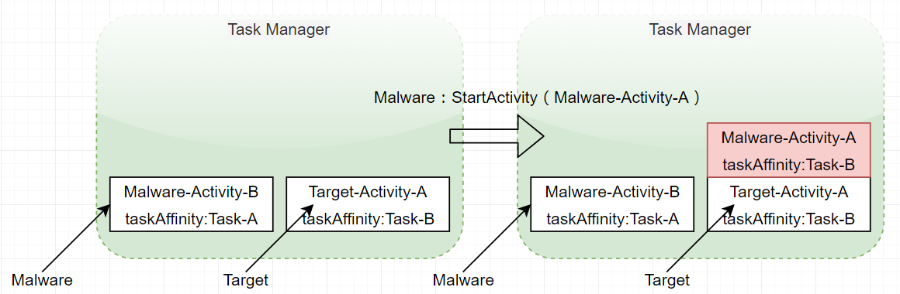
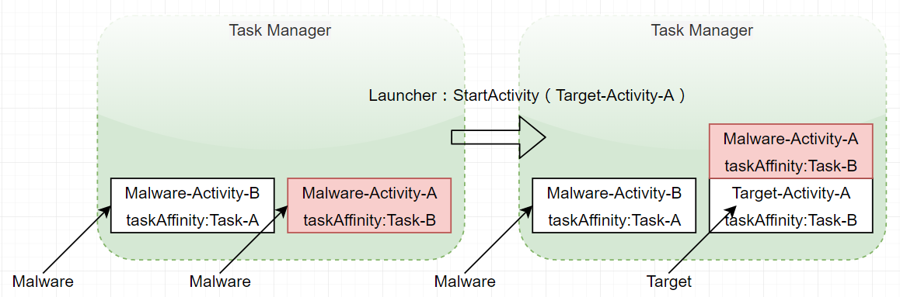
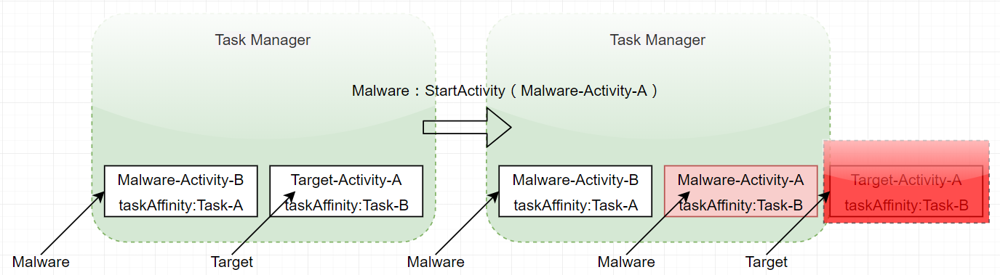

StrandHogg漏洞-Activity劫持
背景简述
StrandHogg漏洞是去年12月份挪威一家APP安全公司披露了一个Android特性中存在的问题，并证明该问题已被多个恶意程序利用来进行提权，该公司还特意为该漏洞命名为StrandHogg漏洞，意为维京海盗式Android应用漏洞。
其实该漏洞并不能直接绕过用户获取权限，而是利用Activity劫持伪装成正常应用通过欺骗用户来获取权限，包括android10在内的所有android版本都受该漏洞的影响。
深入研究发现该问题最早在15年的USENIX安全研讨会就被提出了，研究人员从理论上描述了该漏洞的实现方法，但Google否认了其严重性。之后攻击方法被武汉大学学生发表了论文《一种新的基于APP启动模式的劫持攻击方案》。
今年5月份该公司又搞出个StrandHogg漏洞2.0，本次分享主要还是StrandHogg漏洞的原理。后面有机会再分享升级版的2.0。
前置知识点
Activity劫持
该漏洞的利用本质其实就是Activity劫持，简单来说就是当用户打开正常应用的Activity时，恶意的应用利用它自己实现的Activity覆盖掉正常应用的Activity，实现对用户的欺骗，从而达到我们想要的目的。常用于劫持正常登录页面欺骗用户达到获取用户账号密码的效果。
在讲解该漏洞原理之前我们先来简单看下该漏洞涉及到的一些知识点。
Activity状态转换
首先是Activity，Activity是Android组件中最基本也是最常见的四大组件之一。在一个Android应用中，一个Activity通常就是一个单独的屏幕，上面可以显示一些控件也可以监听并处理用户触发的事件。
一个Activity共有4种状态，分别是运行，暂停，停止与销毁。
- 运行状态就是当Activity处于屏幕前台时，我们能与之交互的状态，此时的Activity处于活动栈的最顶端。
- 暂停状态则是当Activity失去焦点时，但部分界面用户仍然可见时的状态。
- 停止状态是当前Activity完全被另一个Activity覆盖掉的状态，此时的Activity我们是不可见的。
- 当一个Activity被关闭时进入销毁状态，一般是由用户操作或内存不足时系统强制销毁所致。
通过下面的这张图我们看下几种状态之间的互相转换以及每种状态转换时会触发的函数。
一个Activity的状态转换流程如下：

Activity相关的七个生命周期函数，分别为onCreate()，onRestart()，onStart()，onReusme()，onPause()，onStop()，onDestory()。
Task任务，Activity栈
然后是任务(Task)的概念，任务就是一些相关联的Activity的集合，当我们打开手机的任务管理器时，界面上显示的就是一个个任务。一个任务中的Activity可以来自不同的应用程序。比如程序A的Activity打开程序B的一个Activity，这两个Activity都会保存在一个任务中，这样实现是为了更好的用户体验。
每个任务中的Activity都是以栈的方式(后进先出)进行管理。我们称这个栈叫活动栈，所有Activity都保存在栈中，以便用户点击”后退”按钮时导航到之前的Activity恢复执行。
屏幕上始终显示栈顶部的Activity，我们称它为前台Activity，与之关联的任务是前台任务，因此一次只能有一个前台任务，其他的任务都属于后台任务。当任务被切换到后台时，任务中的所有Activity都会停止，并在任务的活动栈中保持不变，这样当用户再次打开该任务时就可以从上次停止的位置接着运行。
这里需要注意的地方就是虽然在android中存在沙箱机制每个应用都受到android沙箱的保护，但来自不同应用程序的Activity可以共存于同一任务中，这给我们劫持Activity提供了机会。
android沙箱：该机制主要基于linux的用户权限保护和进程隔离实现的，每个应用对应一个用户，不同应用间相互隔离，只能访问属于自己的资源，不能访问其他应用的数据。
taskAffinity(任务相关性)
(也就是通过该参数来控制恶意Activity去劫持哪个页面)
与任务相关的一个属性叫做taskAffinity(任务相关性)，在manifest中可以指定这个属性的值，该属性用来标识一个Activity所需要的任务名称。如果在manifest文件中注册Activity时不明确指定taskAffinity属性那么默认该Activity所需任务的名字就是所属应用的包名。所以默认情况下一个app中所有Activity都在同一个task中。当Activity设置了taskAffinity属性，那么这个Activity在被创建时就会运行在和taskAffinity相同的任务中，如果没找到该任务，就新建taskAffinity指定的任务，并将该Activity添加到其中。一般该属性都是和singleTask模式或allowTaskReparenting属性配合使用，其他情况下没什么意义。
4种启动模式
最后来看下Activity启动的4种模式，不同模式实现的效果会不一样。
standard模式(默认启动模式)：这种模式下Activity可以有多个实例，无论任务栈中是否已经存在该Activity的实例都会创建一个新的Activity实例。
singleTop模式(栈顶复用模式)：该模式与Standard模式有些类似，区别在于如果需要启动的Activity在栈顶，不会创建新的实例只是调用该Activity的onNewIntent方法。如果不在栈顶则会创建新的实例。
singleTask模式(栈内复用模式)：这种模式同一个Task内只有一个实例，如果Activity已经位于栈顶，那么系统就不会再创建新的Activity实例，和singleTop一样。但如果Activity存在但不位于栈顶则会将该Activity移到栈顶，并将它上面的Activity出栈。
singleInstance模式(单例模式)：这种模式也是单例模式，但和SingleTask模式不一样，singleInstance的Activity不予许自己的task中存在其他的Activity实例，也就是该模式的Activity应用是task中唯一的Activity实例。
攻击思路和模型
攻击思路
有了上面的基础知识现在我们来看看如何实现我们想要的Activity劫持。
这里有两种情况可以达到我们的效果，首先我们假设有两个应用，分别是恶意应用A，受害者应用B，对应的是劫持页面Malware-Activity-A，任务名为Task-A，被劫持页面Target-Activity-A，任务名为Task-B。
第一种情况
当受害者应用B中被劫持页面Target-Activity-A的android:launchMode=”standard”或”singleTop”时，我们可以把恶意应用A中用来做劫持页面Malware-Activity-A的taskAffinity属性值设置为与被劫持页面Target-Activity-A的taskAffinity值一致(Task-B)，并且把劫持页面Malware-Activity-A的allowTaskReparenting属性设置为true，这样当受害者应用B启动时，用来劫持的Malware-Activity-A就会从启动它的Task-A转换为受害者应用的Task-B的栈顶进行显示。从而完成我们Activity劫持的效果。
不过allowTaskReparenting有个问题，就是只有当Affinity定义的需要转移的Task-B创建时，才会触发重新设置Task的操作，所以这种攻击恶意应用A必须在受害者应用B启动之前就启动，否则劫持就会失败。
解决的方法就是启动Malware-Activity-A的时候通过设置FLAG_ACTIVITY_NEW_TASK属性来实现劫持，该属性的效果是如果Affinity设置的Task已经存在，则直接将Activity添加到该Task中，如果不存在则创建一个新的Task，并将Activity添加进去。这样就避免第一种情况恶意应用A后启动导致没法加入到Task-B的问题。
第二种情况
当受害者应用B中被劫持Target-Activity-A的android:launchMode=”singleInstance”时，由于该模式属于单例模式，不允许自己的Task中存在其他的Activity实例，每次singleInstance属性的Activity启动时无论后台是否存在同名的Task，系统都会创建一个新的Task并将当前的Activity添加到该任务的Activity栈中，之后不可再给该任务添加别的Activity，该任务一直以单Activity的形式存在。但这有个问题就是如果后台不存在同名任务，那么该流程属于正常流程。一旦存在同名任务，系统仍然会创建一个新的Task并赋予不同的Taskid，这就导致系统中存在两个同Task名但不同id的Task，而系统运行任务列表又只会显示最近运行的任务，这就给人一种两者位于同一任务的错觉。
攻击模型
现在我们来看下利用上面讲到的知识如何去实现一个Activity劫持。
android:launchMode=”standard” + android:allowTaskReparenting=”true”
劫持（伪造task，当目标应用启动时，会显示恶意Activity），点击返回后进入目标正常Activity
如果目标应用先启动的话则劫持失败

[视频演示-1.mp4]
android:launchMode=”standard” + Intent.FLAG_ACTIVITY_NEW_TASK(android:launchMode=”singleTask”)
劫持（伪造task，当目标应用启动时，会显示恶意Activity），点击返回后直接退出到桌面
如果目标应用先启动的话仍然可以劫持，点击返回后进入目标正常Activity

[视频演示-2-1.mp4]

[视频演示-2-2.mp4]
android:launchMode=”singleInstance”
劫持（创建一个与目标应用Task名一致但id不一样的新Task，由于系统运行任务列表只显示最近运行的任务，所以在任务列表中就看不到正常应用的Task，给人的感觉就像是被劫持一样）

[视频演示-3.mp4]
应用场景
Activity劫持-网络钓鱼
通过伪造一个与目标Activity一样的恶意Activity比如用户登录界面，充值页面等，当用户点开目标界面时通过上述提到的方法去劫持调目标Activity从而欺骗用户达到钓鱼效果。
防卸载，勒索等
大概的意思就是通过Activity的excludeFromRecents属性把恶意应用的Activity隐藏起来，然后通过监控任务来一直启动恶意Activity避免Activity被关闭，这样每次点击正常目标应用显示的都会是恶意Activity，从而达到防卸载，拒绝打开目标应用的效果，感觉其实和上面的原理还是一样的。
防护措施
由于该问题属于android设计上的一个缺陷所以目前对于这类劫持还没有比较好的防御方案，不过可以适当给用户一些警告，比如提示用户登录界面被覆盖，应用被切换到后台之类的提示。避免用户把恶意的Activity当做正常的页面使用。
通过对应用顶层Activity监控，使用白名单机制避免别的应用覆盖本应用的页面。
参考
9.0源码分析
源码分析
源码分析-比较详细
一种新的基于APP启动模式的劫持攻击方案
Android启动模式和taskAffinity属性详解
安卓特性漏洞重浮水面，已被多个恶意应用利用
Author: Let_go
Link: http://github.com/2019/12/05/StrandHogg漏洞-Activity劫持/
Copyright: All articles in this blog are licensed under CC BY-NC-SA 3.0 unless stating additionally.